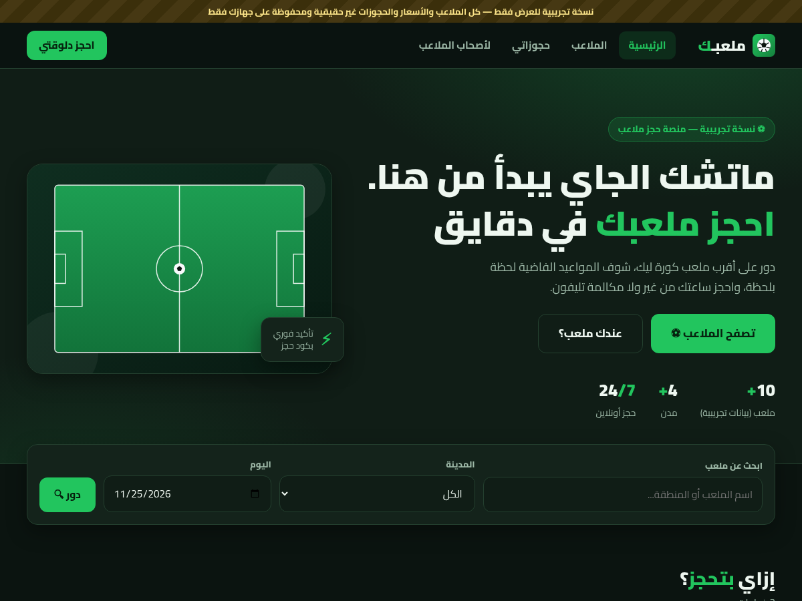

1Arabic UI · booking
Mal3abak · ملعبك

Football pitch booking for players and pitch owners, fully in Arabic and right-to-left. Browse pitches, filter by city, price and rating, pick a slot and book. Demo data, bookings stay in the browser.